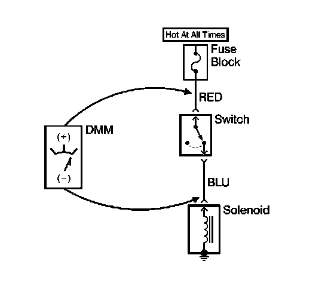

Measuring Voltage Drop
Measuring Voltage Drop
Notice: Refer to Test Probe Notice .
The following procedure determines the difference in voltage potential between 2 points.

1. Set the rotary dial of the DMM to the V (DC) position.
2. Connect the positive lead of the DMM to one point of the circuit to be tested.
3. Connect the negative lead of the DMM to the other point of the circuit.
4. Operate the circuit.
5. The DMM displays the difference in voltage between the 2 points.